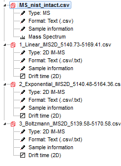
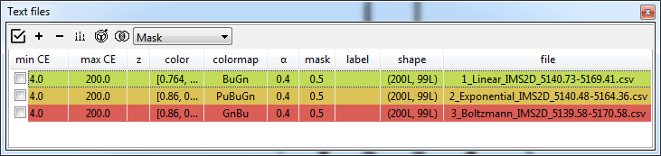
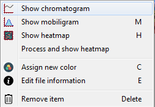
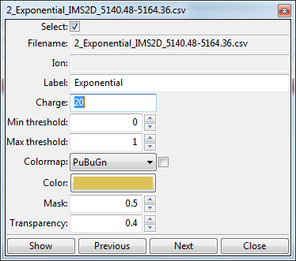
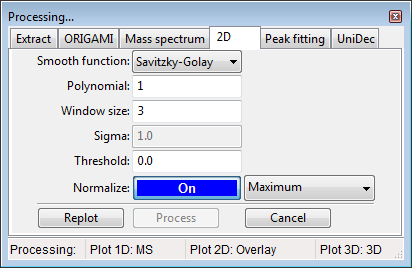
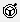

Analysis of text files¶
In this example we will use files provided with the ORIGAMI distribution. You can download MS file and heatmap file or you can find them in your ORIGAMI directory (example_data/text).
Data loading¶
To load text files, please use any of the following:
- Use the file menu. File -> Open IM-MS Text file [CIU] or Open MS Text file
- Use the toolbar. Click on the T or T+ button
- Use a keyboard shortcut:
- CTRL+T - open heatmap text (.csv/.txt/.tab) file
- Drag-and-drop the file in the main window
- Clipboard: - MS data only
Document tree¶
Any file you open will result in generation of a ORIGAMI document that will contain all data that you will generate. It is structured just like a directory on your PC so it should be easy to get used to. When you right-click on any item, a custom menu will appear from which you can figure out what you would like to do. An example is shown below:

Plotting and replotting¶
You can either double-click on an item in the Document tree or right-click and select the option "Show...". If you would like to clear a plot, right-click in the plot area and select "Clear plot".
Panel: Textlist¶
All text-based heatmaps are automatically added to the Panel textlist which usually appears on the right-hand side of the window. From here, you can easily visualise, customise and compare data.

When you right-click on any item in the list, a menu will appear from which you can easily access various visualisation modes and customisation settings.

When you double-click on an item (or right-click and select "Edit file information") a new window will appear where you can change certain parameters, such as charge state, color, colormap, etc.

Processing heatmaps¶
By default, all heatmaps will show the raw data which might not always be the most visually pleasing. In some circumstances, it might be necessary to process (e.g. normalize or smooth) the data.
Processing panel: 2D¶

Processing from Panel: Textlist¶
- Select any number of ions in the textlist.
- In the toolbar, click on the Process() button and select -> Process selected/all ions. Ions will be process based on the parameters in the Processing panel: 2D.
- All process data will appear in the document with the (processed) tag attached to the name.
Processing from Document tree¶
- Right-click on a desired item in the Document tree (e.g. Drift time (2D)) and select Process...
- A new window will appear where you can adjust processing parameters
- Click on the Replot button if you first want to see how the data will look or Process if you would like to add that data to the document.